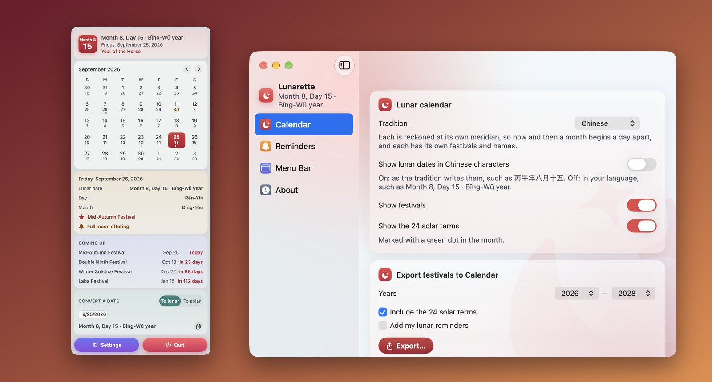

🌕
Ngày 15 tháng 8 năm Bính Ngọ
2026-09-25 · 추분
🥮 한가위 추석 · 오늘 밤
Bính Thìn
간지 (육십갑자)
추분
24절기
병오년 (말띠)
올해의 띠
한가위 추석 · 오늘 밤
다가오는 명절
시각적 시뮬레이션입니다. Mac, iOS, Android용 Lunarette는 100% 오프라인 천문 계산을 수행합니다.

하는 일
Mac에서는 오늘의 음력 날짜를 작은 달 모양이나 글자로 메뉴 막대에 표시하며, 클릭하면 모든 음력 날짜와 명절, 24절기가 담긴 한 달이 펼쳐집니다. iPhone, iPad, Android에서는 앱이 오늘과 이번 달 화면으로 열리고, 위젯이 음력 날짜를 늘 보여 줍니다.
- 네 가지 전통: 중국, 베트남, 한국, 일본. 각 나라의 공식 달력처럼 저마다의 자오선을 기준으로 계산합니다. 가끔은 한 달의 시작이 실제로 하루 차이가 나는데, Lunarette는 이것도 정확하게 맞춥니다. 1985년의 뗏, 2027년의 설날처럼요.
- 하루의 모든 것: 전통에 따라 쓰는 음력 날짜(丙午年八月十五, Ngày 15 tháng 8 năm Bính Ngọ, 병오년 8월 15일), 또는 스위치 하나로 간단한 표기(8월 15일). 날과 달의 간지, 그해의 띠, 그리고 일본의 육요.
- 명절과 절기: 춘절, 뗏, 설날, 원소절, 청명절, 단오절, 우란분절, 중추절, 추석 등과 다가오는 명절까지의 카운트다운.
- 날짜 변환: 양력에서 음력으로, 음력에서 양력으로. 윤달까지 처리하며 바로 복사할 수 있습니다.
- 음력 알림: 매년 음력 날짜로 돌아오는 기념일이나 매달 초하루와 보름을, 매번 알맞은 양력 날짜에 알려 줍니다.
- 위젯: 오늘의 음력 날짜, 그해의 띠, 다가오는 명절을 Mac 데스크탑, iPhone이나 iPad의 홈 화면과 잠금 화면, Android 홈 화면에서.
- 캘린더로 내보내기: 명절, 절기, 음력 알림을 캘린더 앱에서 가져올 수 있는 캘린더 파일로 내보냅니다. Lunarette는 캘린더를 읽거나 바꾸지 않습니다.
macOS 14 Sonoma 이상, iOS 17 또는 iPadOS 17 이상, 또는 Android 8.0 이상이 필요합니다. 1901년부터 2099년까지 지원합니다.
광고로 뒤덮인 달력 앱 vs Lunarette
미신과 광고 없이, 정확한 천문 음력과 24절기의 지혜를 온전히 담았습니다.
| 비교 항목 | 일반 음력 / 만세력 앱 | Lunarette |
|---|---|---|
| 광고 및 미신 | 전면 팝업 광고, 유료 사주팔자 및 부적 결제 유도 | 100% 무광고, 군더더기 없는 정갈하고 품격 있는 디자인 |
| 4개국 전통 경도 | 단일 기준시 적용으로 윤달 및 날짜 오류 발생 (1985년 설날, 2027년 설날) | 한국, 베트남, 중국, 일본 각각의 표준 자오선에 맞춘 정확한 천문 계산 |
| 24절기와 명절 | 태양 황경 오차, 전통 명절 D-day 카운트다운 부재 | 정확한 24절기 환산, 고유 명절 및 실시간 D-day 안내 |
| 음력 일정 알림 | 양력 알림만 지원하여 제사나 음력 생일을 매년 수동 환산해야 함 | 제사, 음력 생일, 매월 초하루·보름 자동 반복 알림 |
| 네이티브 완성도 | 무거운 웹뷰 방식으로 배터리 소모 및 개인정보 추적 | Mac 메뉴바 상주, 잠금화면 및 바탕화면 위젯, 100% 오프라인 작동 |
한 문단으로 보는 개인정보 보호
Lunarette에는 네트워크 접근도, 계정도, 추적도 없습니다. 달력은 달과 해의 위치를 바탕으로 기기에서 계산되며, 알림도 기기에만 남습니다. 전체 개인정보 처리방침에서 같은 내용을 더 자세히 볼 수 있습니다.
같은 개발자의 다른 앱
한 가지 일을 제대로 하도록 만든 작은 앱들입니다. 계정도 광고도 없고, 어떤 앱도 사용자를 추적하지 않습니다.
 Statuette메뉴 막대에서 보는 CPU, 메모리, 디스크, 네트워크.Mac
Statuette메뉴 막대에서 보는 CPU, 메모리, 디스크, 네트워크.Mac Tockette메뉴 막대에서 한 번 끌면 시작되는 타이머.Mac
Tockette메뉴 막대에서 한 번 끌면 시작되는 타이머.Mac Zonette필요한 모든 시간대를 클릭 한 번으로.MaciPhone 및 iPadAndroid
Zonette필요한 모든 시간대를 클릭 한 번으로.MaciPhone 및 iPadAndroid Lunette달과 해를 한눈에.MaciPhone 및 iPadAndroid
Lunette달과 해를 한눈에.MaciPhone 및 iPadAndroid Pausette눈과 허리를 위한 부드러운 휴식.Mac
Pausette눈과 허리를 위한 부드러운 휴식.Mac Poisette착용한 AirPods가 바른 자세를 알려 줍니다.MaciPhone 및 iPad
Poisette착용한 AirPods가 바른 자세를 알려 줍니다.MaciPhone 및 iPad Hushette반복되지 않는 차분한 주변 소리.MaciPhone 및 iPadAndroid
Hushette반복되지 않는 차분한 주변 소리.MaciPhone 및 iPadAndroid Tapsody타이핑할 때 들리는 기계식 키보드 소리.Mac
Tapsody타이핑할 때 들리는 기계식 키보드 소리.Mac Thrumline메뉴 막대에서 실시간으로 보는 심박수.Mac
Thrumline메뉴 막대에서 실시간으로 보는 심박수.Mac NightjarMac을 깨어 있게. 정직하게.Mac
NightjarMac을 깨어 있게. 정직하게.Mac Umbrette작업 중인 창만 빼고 모두 어둡게.Mac
Umbrette작업 중인 창만 빼고 모두 어둡게.Mac Prompette카메라 바로 아래의 프롬프터.MaciPhone 및 iPadAndroid
Prompette카메라 바로 아래의 프롬프터.MaciPhone 및 iPadAndroid Tallette계산을 위한 종이 테이프.MaciPhone 및 iPadAndroid
Tallette계산을 위한 종이 테이프.MaciPhone 및 iPadAndroid Probette미디어 파일의 모든 기술 정보를 쉬운 말로.MaciPhone 및 iPadAndroid
Probette미디어 파일의 모든 기술 정보를 쉬운 말로.MaciPhone 및 iPadAndroid Bindette오디오 파일을 제대로 된 오디오북 한 권으로.MaciPhone 및 iPadAndroid
Bindette오디오 파일을 제대로 된 오디오북 한 권으로.MaciPhone 및 iPadAndroid Lettrettewinmail.dat 및 .msg 파일을 보낸 그대로 엽니다.MaciPhone 및 iPadAndroid
Lettrettewinmail.dat 및 .msg 파일을 보낸 그대로 엽니다.MaciPhone 및 iPadAndroid Nhanh Tay네 개의 답을 순서대로. 빠르게.MaciPhone 및 iPadAndroid
Nhanh Tay네 개의 답을 순서대로. 빠르게.MaciPhone 및 iPadAndroid Pinette늘 눈앞에 두는 메모.MaciPhone 및 iPadAndroid
Pinette늘 눈앞에 두는 메모.MaciPhone 및 iPadAndroid Usagette메뉴 막대에서 보는 Claude 사용 한도.Mac
Usagette메뉴 막대에서 보는 Claude 사용 한도.Mac Squiggo다정한 친구와 함께 그려요.MaciPhone 및 iPadAndroid
Squiggo다정한 친구와 함께 그려요.MaciPhone 및 iPadAndroid Foreman현장 일을 위한 작업, 견적, 청구서.MaciPhone 및 iPadAndroid
Foreman현장 일을 위한 작업, 견적, 청구서.MaciPhone 및 iPadAndroid Tilewake그림이 깨어나는 슬라이딩 퍼즐.MaciPhone 및 iPadAndroid
Tilewake그림이 깨어나는 슬라이딩 퍼즐.MaciPhone 및 iPadAndroid Chăm luyện베트남 초등학생 연습 문제, 소리 내어 읽어 줘요.MaciPhone 및 iPadAndroid
Chăm luyện베트남 초등학생 연습 문제, 소리 내어 읽어 줘요.MaciPhone 및 iPadAndroid Salah온 가족을 위한 예배 시간.MaciPhone 및 iPadAndroid
Salah온 가족을 위한 예배 시간.MaciPhone 및 iPadAndroid